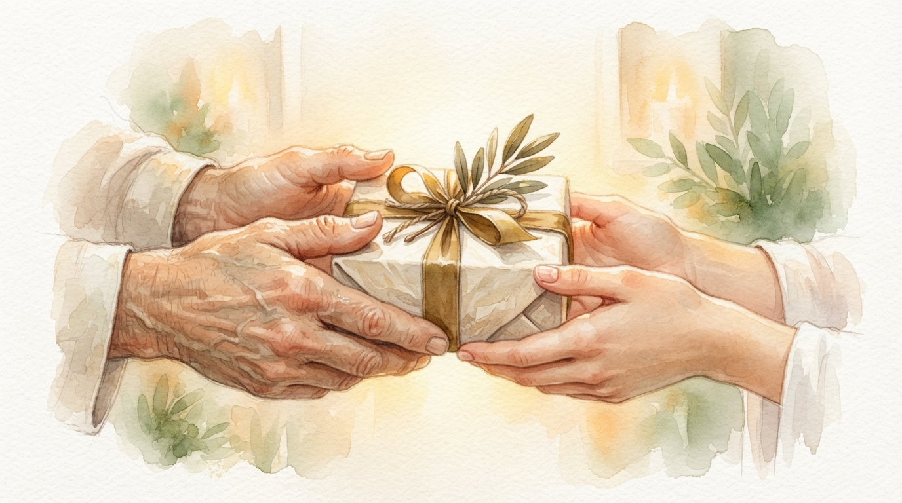
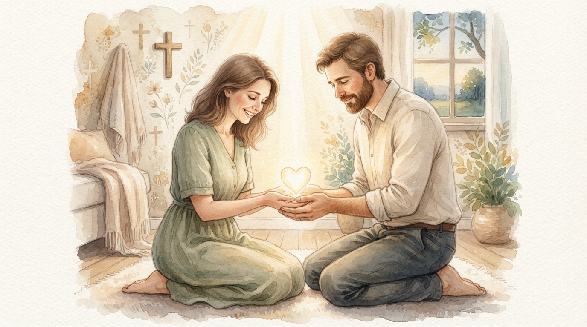
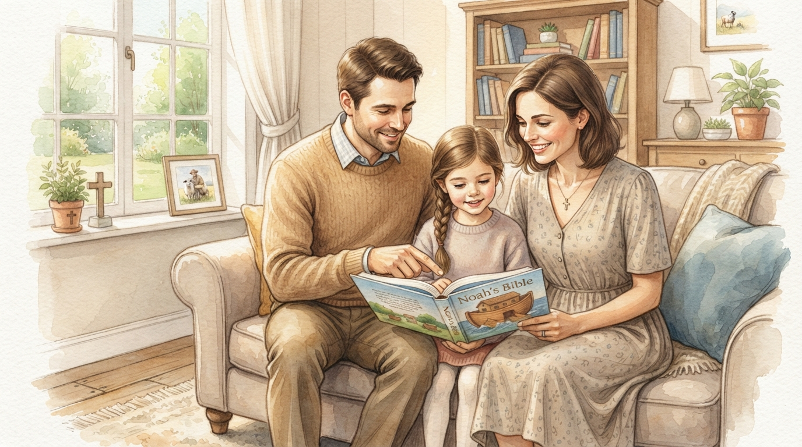
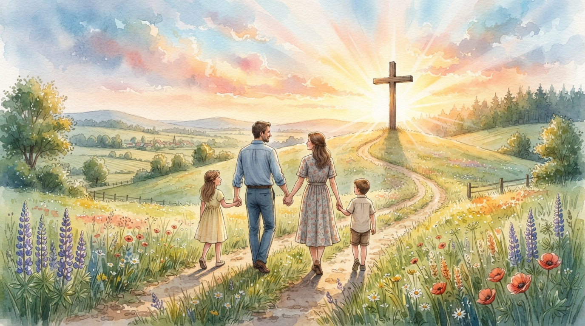
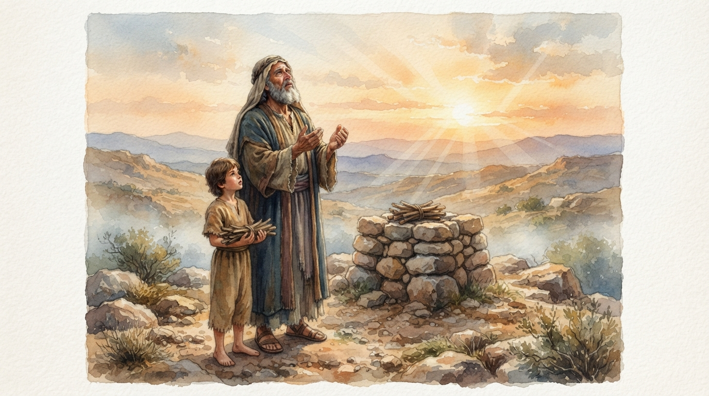
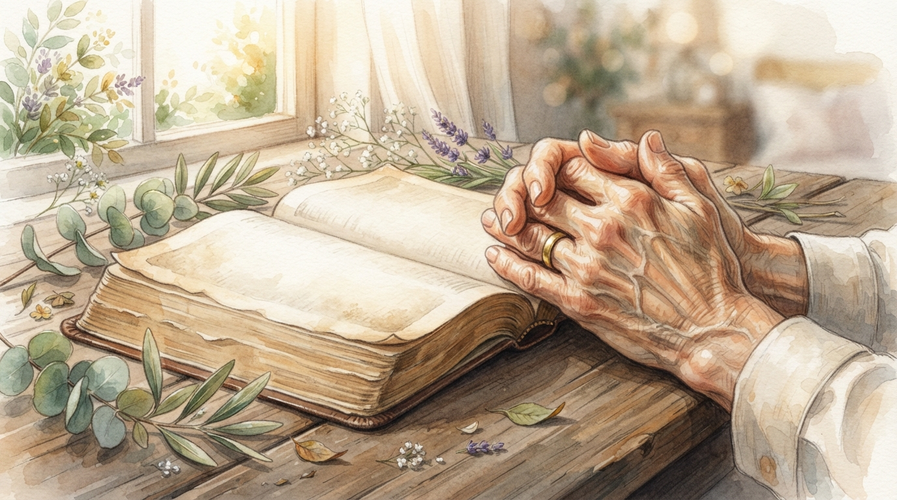

詩篇 127 篇把兒女放在「耶和華所賜」的脈絡中， 首先強調的是生命的來源與祝福。
這節經文至少告訴我們兩件事情：
我們平常理解「賞賜」，很容易想到「送給我， 所以就是我的」。但是兒女是「人」，不是物品。
例如老闆賞賜我一萬元。
錢給了我之後，我可以合法地使用、管理它。
重點：強調「得到」。
上帝把一個寶貴的生命賜給父母， 父母因此成為孩子的父母。
但是孩子不是一件可以任意處置的物品。
重點：強調「生命的賜予」與「父母的託付」。

「上帝把孩子賜給我」， 是否代表「我可以完全決定孩子的一切」？
答案：不是。
父母擁有的是父母的身分、權柄與責任， 而不是對另一個人的「任意處置權」。
從聖經的角度來看，父母的權柄是真實的， 但這個權柄應當受到上帝旨意的約束。
兒女不是父母「理所當然擁有」的東西， 而是上帝所賜的生命。
因此父母首先應當： 珍惜、感恩。

父母有養育、保護、引導與教導兒女的責任。
「教養孩童，使他走當行的道， 就是到老他也不偏離。」
箴言 22:6

父母不是兒女的「神」。
孩子的生命、人格、未來與信仰， 最終都在上帝的主權之下。

亞伯拉罕與以撒的故事，可以幫助我們更深理解 「兒女是父母的孩子，但生命的主權仍在上帝手中」。

以撒是上帝應許給亞伯拉罕的兒子， 是亞伯拉罕非常珍愛的孩子。
但是在創世記 22 章， 上帝要求亞伯拉罕把以撒獻上。
以撒確實是亞伯拉罕的兒子， 但亞伯拉罕不能把自己當成以撒生命的「主人」。
兒女屬於家庭的關係， 但人的生命最終仍然在上帝的主權之下。
如果把「所有權」理解成： 「我可以任意決定、任意控制、任意處置」， 那麼父母並沒有這樣的權利。
但父母確實擁有：
「孩子是上帝所賜的」不是一句漂亮的宗教用語， 它其實會改變父母與兒女相處的方式。
「我的孩子」沒有錯， 但我們可以再多想一步：
「主啊，祢把這個孩子交給我， 我要怎樣照祢的心意來愛他？」
父母很容易把自己的期待， 當成孩子人生唯一正確的答案。
但孩子有自己的性格、恩賜與人生道路。
父母的管教不是為了證明： 「我是老大，你必須聽我的。」
而是為了幫助孩子學習真理、 責任、愛與敬畏上帝。
當父母把孩子視為「上帝的賞賜」， 就會更容易看見：
孩子的存在本身，就是一份恩典。
兒女是上帝賜給父母的珍貴福分，
也是上帝託付父母照顧的生命。
所以，我們可以很自然地說：
「這是我的孩子。」
但基督徒父母還可以再多說一句：
「主啊，這是祢賜給我的孩子， 求祢幫助我忠心地照顧他。」
這就是「賞賜」與「所有權」最大的不同。
父母有權柄，但權柄是為了愛與養育； 父母有責任，但生命的最終主權仍然屬於上帝。

親愛的天父，感謝祢將兒女賜給我們， 讓我們在家庭中經歷祢的恩典。
求祢幫助我們明白， 兒女不是我們可以任意控制的人， 而是祢所託付給我們珍貴的生命。
求祢賜給父母智慧， 讓我們有愛心、有耐心， 能夠在真理中教導， 在恩典中陪伴。
也求祢幫助我們放下過度的控制與期待， 學習把兒女交在祢手中， 相信祢對他們的生命有美好的計畫。
奉主耶穌基督的名禱告， 阿們。